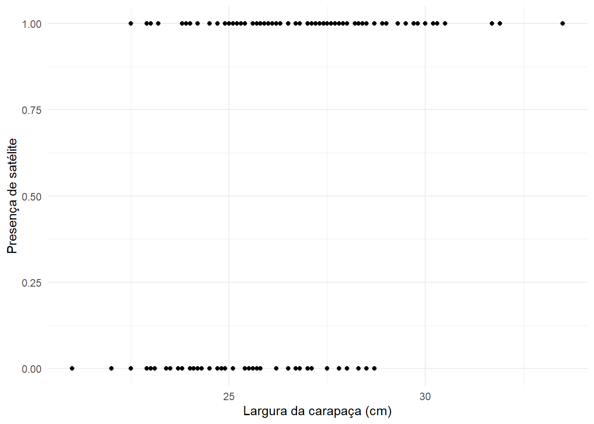
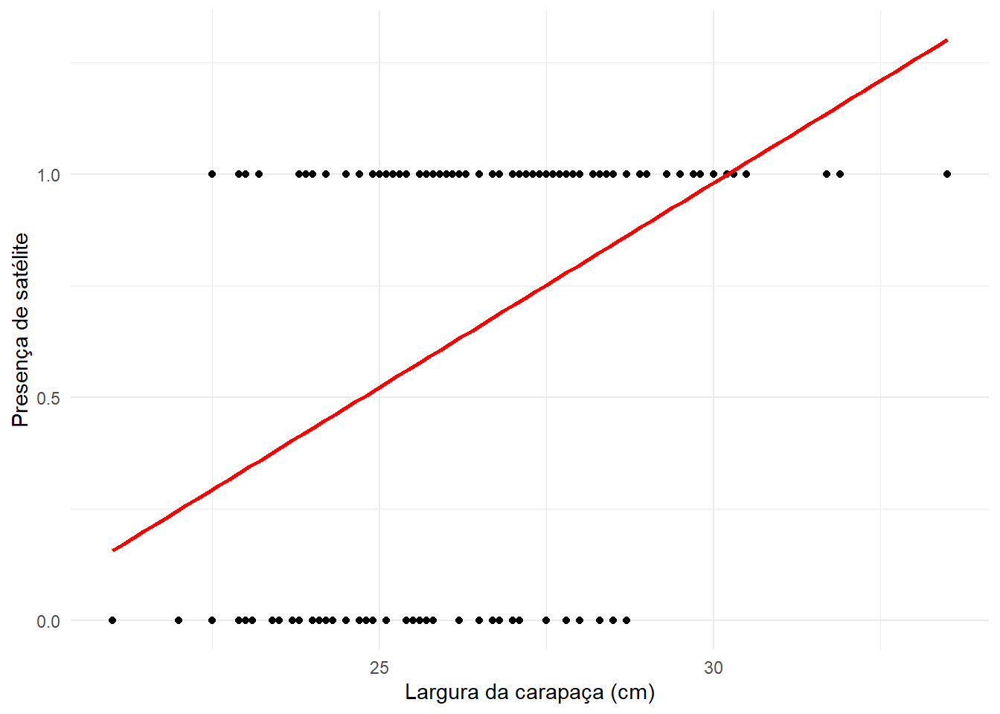
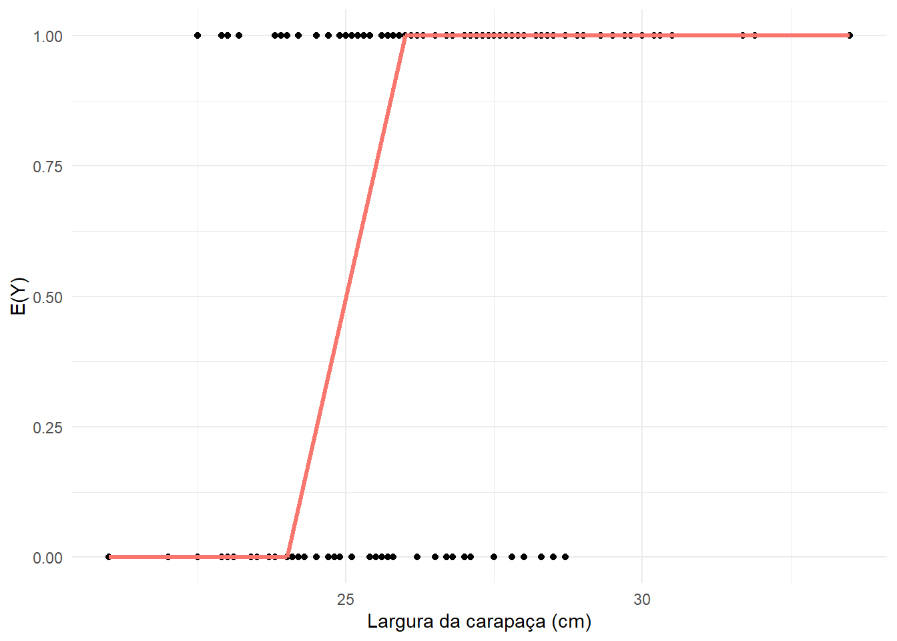
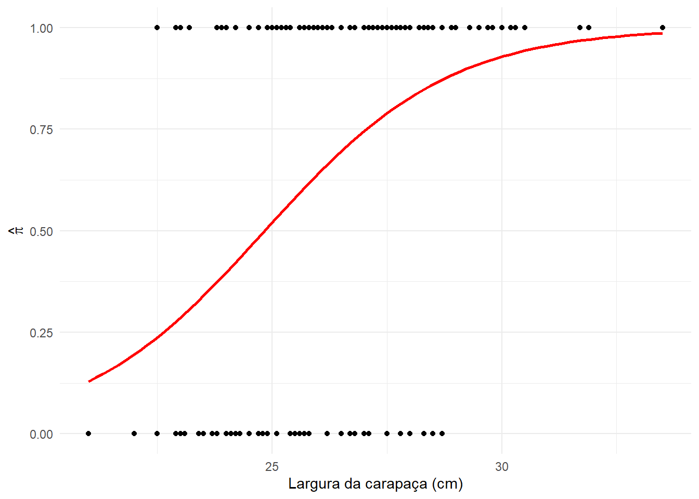
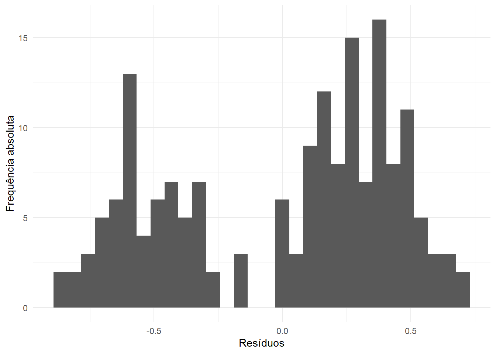
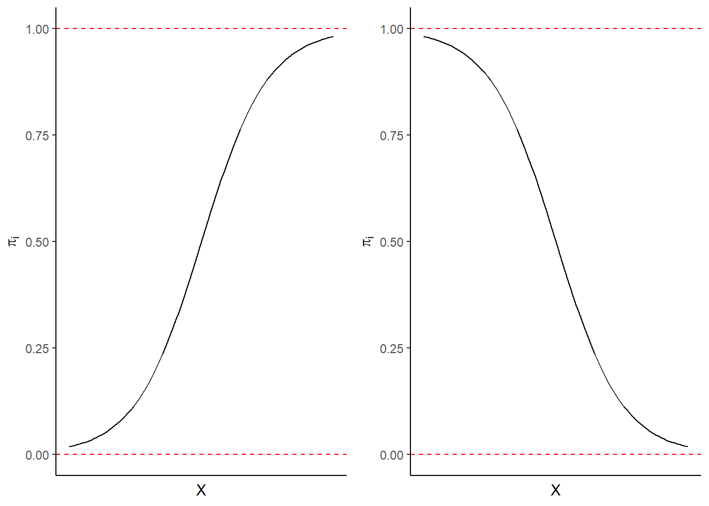

library(ggplot2)
ggplot(horseshoe, aes(x = width, y = y)) +
geom_point() +
labs(
x = "Largura da carapaça (cm)",
y = "Presença de satélite"
) +
theme_minimal()
Neste tópico iremos discutir sobre regressão logística. Trata-se de um modelo de regressão não linear e serão abordados aspectos teóricos e aplicados, envolvendo estimação dos parâmetros do modelo de regressão e inferência. Nas aplicações serão utilizados os softwares R e SAS\(\scriptsize ^\textregistered\), considerando diferentes conjuntos de dados.
Essa aula é baseada no Capítulo 4 - Logistic regression do livro An introduction to categorical data analysis (Agresti, 2007), Capítulo 14 - Logistic regression, Poisson regression, and Generalized Linear Models do livro Applied Linear Statistical Models (Kutner et al., 2005) e no livro Logistic regression using the SAS\(\scriptsize ^\textregistered\) system - theory and application (Allison, 1999).
Neste tópico trataremos sobre a modelagem estatística de variáveis resposta binárias ou dicotômicas, sob o contexto de ajuste de modelos de regressão. Variáveis binárias são aquelas que assumem como resposta apenas dois possiveis valores, muitas vezes definidos como sucesso e fracasso, que geralmente assumem os valores 1 e 0, respectivamente.
Kutner et al. (2005) afirma que em várias aplicações de análise de regressão têm-se variáveis resposta binárias e apresentam os seguintes exemplos:
Esses quatro exemplos correspondem a uma pequena amostra da infinidade de estudos que mensuram variáveis binárias e nos quais tem-se o objetivo de ajustar um modelo de regressão linear para avaliar a relação entre essa variável binária (variável dependente) e as variáveis explicativas (variáveis independentes).
De acordo com Agresti (2007), os dados binários correspondem à forma mais comum de dados categóricos e o modelo mais utilizado para esse tipo de dado é o de regressão logística.
O modelo de regressão logística é parte de um conjunto maior, denominado por Nelder e Wedderburn (1972) como modelos lineares generalizados (MLG). Esses autores mostraram que vários métodos ou técnicas estatísticas estudadas e propostas separadamente, poderiam ser representadas sob uma formulação unificada (Cordeiro et al., 2024). Dentre os modelos comumente utilizados na análise de dados, que pertencem à classe dos MLG, podemos citar:
Resumidamente, os MLG possuem três componentes:
Modelo de regressão linear: \[g(\mu) = \beta_0 + \beta_1 X_1 + \beta_2 X_2 + \ldots + \beta_k X_k,\] no qual o componente sistemático ou preditor linear corresponde a um modelo de regressão linear múltipla (MRLM). Neste curso definimos o MRLM por: \[Y_i = \beta_0 + \beta_1 X_{1i} + \beta_2 X_{2i} + \ldots + \beta_k X_{ki} + \varepsilon_i,\] em que \(E(Y_i) = \mu_i = \beta_0 + \beta_1 X_{1i} + \beta_2 X_{2i} + \ldots + \beta_k X_{ki}\). Portanto, tem-se nesse modelo a função de ligação identidade, ou seja, \(g(\mu_i) = \mu_i\). Esse tipo de função de ligação também é comumente considerada nos modelos de ANOVA.
Modelo de regressão logística: considere \(Y\) uma variável aleatória (v.a.) que tenha distribuição Bernoulli e uma amostra aleatória de \(n\) v.a. dada por \(Y_1, Y_2, \ldots Y_n\). Dessa forma, \(Y_i \sim Bernoulli(\pi_i)\), com \(E(Y_i) = \mu_i = \pi_i\) e \(V(Y_i) = \pi_i(1-\pi_i)\). Nessa situação, uma das possíveis maneiras é definir \(g(\mu_i)\) como uma função logit ou logito. Assim tem-se: \[ g(\mu_i) = g(\pi_i) = logit (\pi_i) = log \left( \dfrac{\pi_i}{1-\pi_i} \right) = \beta_0 + \beta_1 X_{1i} + \beta_2 X_{2i} + \ldots + \beta_k X_{ki}. \]
AGRESTI, A. An introduction to categorical data analysis. 2nd ed. Hoboken: John Wiley & Sons Inc. 2007
ALLISON, P.D. Logistic regression using the SAS\(\scriptsize ^\textregistered\) system: theory and application. Cary: SAS Institute Inc., 1999.
CORDEIRO, G.M.; DEMÉTRIO, C.G.B.; MORAL, R.A. Modelos lineares generalizados e aplicações. São Paulo: Blucher, 2024
KUTNER, M.H.; NACHTSSHEIM, C.J.; NETER, J.; LI, W. Applied linear statistical models. 5ed. New York: McGraw-Hill/Irwin, 2005.
Considere os dados apresentados por Agresti (2007), provenientes de uma pesquisa realizada em uma ilha do Golfo do México, com fêmeas de caranguejos-ferradura (horseshoe crab). São informações de 173 fêmeas do caranguejo-ferradura em acasalamento e têm-se as seguintes variáveis:

Suponha que o pesquisador tenha o objetivo de estudar a relação entre a variável binária presença de machos satélites (Y) (0 = sem satélite e 1 = pelo menos um satélite) e o tamanho da fêmea do caranguejo-ferradura, avaliado com base na largura da carapaça (width), dada em cm. Machos satélites são aqueles que poderiam acasalar ou fertilizar os óvulos da fêmea. Inicialmente, vamos obter um gráfico de dispersão considerando essas duas variáveis.
library(ggplot2)
ggplot(horseshoe, aes(x = width, y = y)) +
geom_point() +
labs(
x = "Largura da carapaça (cm)",
y = "Presença de satélite"
) +
theme_minimal()
Pensando no modelo mais simples, ou seja, de 1\(^o\) grau, podemos ajustar uma reta para descrever essa relação, conforme pode ser visto na Figure 15.2.
ggplot(horseshoe, aes(x = width, y = y)) +
geom_point() +
geom_smooth(method = "lm", se = FALSE, color = "red") +
labs(
x = "Largura da carapaça (cm)",
y = "Presença de satélite"
) +
theme_minimal()
Pode-se observar na Figure 15.2 que o modelo linear simples não é nada adequado para descrever a relação entre a presença de satélites (Y) e a largura da carapaça (X). Além de verificar que a reta não reflete o comportamento dos pontos, ainda pode-se observar que essa reta leva à obtenção de valores estimados acima de 1, o que não pode ocorrer, pois tem-se apenas valores de \(Y\) iguais a 0 ou 1.
Dessa maneira, utilizar um modelo de regressão linear simples (MRLS) não é adequado nessas situações em que se tem uma variável dependente dicotômica ou binária, ou seja, que assume apenas valores iguais a 0 e 1. Apesar de estar considerando inicialmente o MRLS, essa conclusão é válida para qualquer modelo de regressão linear múltipla (MRLM). Portanto, em situações em que se tenha variáveis resposta binárias, utilizar modelos de regressão linear (MRL), como os que foram vistos até o momento, não é adequado.
Pensando em uma possível melhoria no modelo proposto, será que o ajuste apresentado na Figure 15.3 é mais plausível?

Conforme pode ser visto na Figure 15.3, os valores estimados da função da resposta binária, \(E(Y_i) = \pi_i\), estão no intervalo \(0 \leq \pi_i \leq 1\). Como \(\pi_i\) corresponde a uma probabilidade, o modelo proposto e ajustado com certeza é mais plausível. Porém, nesse modelo considera-se que a probabilidade de se ter satélites é igual a zero para fêmeas com uma largura de carapaça inferior a um determinado valor (que na Figure 15.3 foi assumido 24 cm) e é igual a 1 para fêmeas com largura de carapaça superior a 26 cm. Portanto, esse tipo de modelo não é adequado, uma vez que não existe uma regra plausível para a determinação desses limiares (obs.: na Figure 15.3 os limiares foram definidos de forma totalmente aleatória).
Uma outra alternativa ao modelo apresentado na Figure 15.3 seria considerar um modelo para o qual as probabilidades 0 e 1 sejam atingidas assintoticamente, como ocorre no caso de curvas em forma de S ou S invertido, cuja forma pode ser descrita por um modelo logístico. Um exemplo desse tipo de ajuste é apresentado na Figure 15.4.

A curva ajustada apresentada na Figure 15.4 é exatamente aquela obtida considerando a análise de regressão logística.
A seguir serão descritos os principais problemas ao considerar diretamente um modelo de regressão linear na avaliação de variáveis binárias. Posteriormente, será detalhado o ajuste de modelos de regressão logística.
Kutner et al. (2005) e Allison (1999) apresentam uma breve, mas importante, discussão em relação a problemas que surgem em relação ao uso de MRL para o caso de variáveis binárias.
Inicialmente, vamos relembrar algumas pressuposições dos MRL, considerando um MRLS dado por: \[ y_i = \beta_{0} + \beta_{1}x_{i} + \varepsilon_i, \] em que \(y_i\) e \(x_i\) são, respectivamente, os i-ésimos valores observados das variáveis dependente e independente, \(\beta_{0}\) e \(\beta_{1}\) são os parâmetros do modelo e \(\varepsilon_i\) é o erro associado à observação \(y_i\), sendo esses erros independentes e identicamente distibuídos segundo uma normal com média zero e variância comum \(\sigma^2\), ou seja, \(\varepsilon_i \sim N(0,\sigma^2)\). Assim, \(E(\varepsilon_i)=0\), \(V(\varepsilon_i)=\sigma^2\) e \(Cov(\varepsilon_i,\varepsilon_i')=0\), com \(i \ne i'\).
Dentre os vários problemas em relação ao uso de MRL para o caso de variáveis binárias, podem ser destacados três:
Se \(y_i = 1\): \(\varepsilon_i = 1 - \beta_0 - \beta_1 x_i\); e
Se \(y_i = 0\): \(\varepsilon_i = -\beta_0 - \beta_1 x_i\).
Claramente, o MRLS, o qual assume que os \(\varepsilon_i\) são normalmente distribuídos, não é apropriado, conforme pode ser visto no histograma apresentado na Figure 15.5, dos erros estimados ao considerar o ajuste desse modelo aos dados do exemplo de motivação.
reg1<- lm(y ~ width, data=horseshoe)
resid.reg1<- data.frame(res = residuals(reg1))
ggplot(resid.reg1, aes(x = res)) +
geom_histogram() +
labs(
x = "Resíduos",
y = "Frequência absoluta"
) +
theme_minimal()
Variância dos erros não constante (heterocedasticidade): os erros \(\varepsilon_i\) não têm variâncias iguais quando a variável resposta é uma variável binária. Para visualizar isso, considere que \(Y_i\) é uma variável aleatória com distribuição Bernoulli, ou seja, \(Y_i \sim Bernoulli(\pi_i)\), uma vez ela assume apenas valores 0 ou 1. Assim,
Além disso, \(\varepsilon_i = y_i - \beta_0 - \beta_1 x_i\), em que \(- \beta_0 - \beta_1 x_i\) é uma constante e, portanto, \(V(\varepsilon_i) = V(Y_i) = \pi_i (1 - \pi_i)\). Ademais, considerando o modelo de regressão linear simples, \[E(Y_i) = \beta_0 + \beta_1 x_i = \pi_i. \tag{15.1}\] Assim, \[ V(\varepsilon_i) = V(Y_i) = \pi_i (1 - \pi_i) = (\beta_0 + \beta_1 x_i) (1 - \beta_0 - \beta_1 x_i), \] ou seja, a \(V(\varepsilon_i)\) depende do valor de \(x_i\) e, dessa forma, varia conforme o valor de \(x_i\). Assim, tem-se que \(V(\varepsilon_i)\) é diferente para diferentes valores de \(Y_i\).
De acordo com Allison (1999) a violação da ´pressuposição de homogeneidade de variâncias tem duas consequências indesejadas:
Restrição na função resposta: ao considerar um MRLS, que a variável resposta é binária e a Equation 15.1, tem-se que \[ \pi_i = \beta_0 + \beta_1 x_i. \tag{15.2}\]
Inicialmente parece não haver problema algum com o modelo definido na Equation 15.2. Porém, sabe-se que \(\pi_i\) é uma probabilidade e, portanto, \(0 \leq \pi_i \leq 1\). Assim, pensar que para valores contínuos de \(x_i\), que geralmente não assume valores em um intervalo qualquer, que tenha muito bem definido limites inferior e superior, não se possa obter valores de \(\pi_i\) inferiores a 0 ou superiores a 1, é no mínimo não plausível. Esse problema pode ser observado na Figure 15.2, onde se têm valores estimados para \(y_i\) maiores do que 1.
Esses problemas relacionados ao ajuste de MRL considerando uma variável resposta binária, levaram ao desenvolvimento de métodos alternativos que fossem mais coerentes conceitualmente e que apresentassem melhores propriedades estatísticas (Allison, 1999). Dentre esses métodos podemos citar o ajuste de modelos logístico (ou de regressão logística), probito e complemento log-log.
Neste material definiremos o modelo de regressão logística como descrito no item 3.2.3 de Agresti (2007, pág. 70).
Considere a v.a. \(Y_i\), tal que \(Y_i \sim Bernoulli(\pi_i)\). Assim, a v.a. \(Y_i\) assume apenas dois possíveis valores (0 ou 1). Nessa situação têm-se:
Inicialmente, será considerado como preditor linear um modelo de regressão linear simples, ou seja, \[ g(\mu_i) = g(\pi_i) = \beta_0 + \beta_1 x_i. \]
De acordo com Agresti (2007), as relações entre \(\pi_i\) e \(x_i\) geralmente são não lineares, ao invés de lineares. Uma mudança no valor de \(x_i\) pode ter menos impacto quando \(\pi_i\) está próximo de 0 ou 1 do que quando \(\pi_i\) está próximo a 0,5 (que corresponde ponto médio do intervalo entre 0 e 1). Como exemplo, considere que se tenha interesse em comprar um automóvel novo ou usado. Seja \(\pi_i\) a probabilidade de decidir por um carro novo, quando a renda familiar anual for igual a \(x_i\). Um aumento de \(US\$ 10.000\) na renda familiar anual provavelmente teria menos efeito quando \(x_i = US\$ 1.000.000\), que corresponde à situação em que \(\pi_i\) está próximo de 1, do que quando \(x_i = US\$ 50.000\).
Ao estabelecer a relação entre \(\pi_i\) e \(x_i\), geralmente \(\pi_i\) aumenta ou diminui continuamente à medida que \(x_i\) aumenta. Exemplos de curvas em formato de S ou S invertido para descrever essa relação são apresentadas na Figure 15.6.

Segundo Agresti (2007), a equação matemática mais importante que descreve \(\pi_i\) como função de \(x_i\), conforme as formas apresentadas na Figure 15.6, é dada por: \[ \pi_i = \dfrac{exp(\beta_0 + \beta_1 x_i)}{1+exp(\beta_0 + \beta_1 x_i)} = \dfrac{e^{\beta_0 + \beta_1 x_i}}{1+e^{\beta_0 + \beta_1 x_i}}, \tag{15.3}\]
a qual é chamada de função de regressão logística.
O modelo regressão logística é definido a partir da Equation 15.3, efetuando-se algumas operações algébricas e aplicando-se o logaritmo neperiano ou natural, que definiremos aqui como log, ou seja, \[ \begin{array}{rcl} \pi_i & = & \dfrac{e^{\beta_0 + \beta_1 x_i}}{1+e^{\beta_0 + \beta_1 x_i}} \\ \dfrac{1}{\pi_i} & = & \dfrac{1+e^{\beta_0 + \beta_1 x_i}}{e^{\beta_0 + \beta_1 x_i}} \\ \dfrac{1}{\pi_i} & = & \dfrac{1}{e^{\beta_0 + \beta_1 x_i}} + 1 \\ \dfrac{1}{\pi_i} - 1 & = & \dfrac{1}{e^{\beta_0 + \beta_1 x_i}} \\ \dfrac{1 - \pi_i}{\pi_i} & = & \dfrac{1}{e^{\beta_0 + \beta_1 x_i}} \\ \dfrac{\pi_i}{1 - \pi_i} & = & e^{\beta_0 + \beta_1 x_i} \\ log \left( \dfrac{\pi_i}{1 - \pi_i} \right) & = & log \left( e^{\beta_0 + \beta_1 x_i} \right) \end{array} \] \[ log \left( \dfrac{\pi_i}{1 - \pi_i} \right) = \beta_0 + \beta_1 x_i \tag{15.4}\]
Como descrito anteriormente, o modelo de regressão logística (Equation 15.4) é um caso particular dos modelos lineares generalizados em que:
Componente aleatório: a variável resposta \(Y_i\) é binária, ou seja, assume apenas valores 0 ou 1. Portanto, \(Y_i \sim Bernoulli(\pi_i)\), que pertence à família exponencial. Vale ressaltar que o modelo logit também pode ser utilizado quando \(Y_i \sim Binomial(n,\pi_i)\), uma vez que na distribuição binomial a v.a. corresponde ao número de sucessos em \(n\) realizações independentes de uma Bernoulli.
Função de ligação: é a função logit de \(\pi_i\), ou seja, \[ log \left( \dfrac{\pi_i}{1 - \pi_i} \right). \]
Observe que, apesar de \(\pi_i\) estar restrito ao intervalo de 0 a 1, o logit de \(\pi_i\) pode ser qualquer número real. Os números reais também são o intervalo potencial para os preditores lineares (como \(\beta_0 + \beta_1 x_i\)) que formam o componente sistemático de um GLM. Portanto, este modelo não tem o problema estrutural que o modelo de probabilidade linear (Equation 15.2) tem.
Neste tópico descreveremos resumidamente, conforme apresentado por Casella e Berger (2002), sobre o método de estimação comumente utilizado na obtenção de \(\hat{\beta}_0\) e \(\hat{\beta}_1\), ao considerar o modelo de regressão logística dado por \[ logit (\pi_i) = log \left( \dfrac{\pi_i}{1-\pi_i} \right) = \beta_0 + \beta_1 x_{i}. \tag{15.5}\]
Pode-se observar que na Equation 16.1, a relação entre a v.a. \(Y_i\) e o preditor \(\beta_0 + \beta_1 x_{i}\) não é mais direta, como tínhamos no caso de um MRLM dado por: \[ Y_i = \beta_0 + \beta_1 x_{1i} + \beta_2 x_{2i} + \ldots + \beta_k x_{ki}. \] Portanto, de acordo com Casella e Berger (2002), o método dos mínimos quadrados deixa de ser uma opção. Assim, utiliza-se o método da máxima verossimilhança na obtenção dos estimadores de \(\beta_0\) e \(\beta_1\).
Apesar de estar considerando o preditor linear como um modelo de regressão linear simples, a expansão para o caso de modelos de regressão múltipla é direta.
Conforme definido anteriormente, a v.a. a ser analisada é binária, ou seja, assume apenas valores iguais a 0 ou 1. Portanto, considerando uma amostra aleatória de \(n\) v.a. \(Y_i\), tem-se que \(Y_i \sim Bernoulli(\pi_i)\). Assim, tem-se a função de probabilidade: \[P(Y_i = y_i) = f_{Y_i}(y_i) = \pi_i^{y_i} (1-\pi_i)^{1-y_i} I_{\{0,1\}}(y_i)\] e a função de verossimilhança é dada por: \[ L(\beta_0, \beta_1| \mathbf{y}) = \prod_{i=1}^n \pi_i^{y_i} (1-\pi_i)^{1-y_i}. \] Para facilitar o processo de derivação em relação a \(\beta_0\) e \(\beta_1\), Casella e Berger (2002) definem a função \(F_i = F(\beta_0 +\beta_1 x_i)\), uma vez que \[ \pi_i = \dfrac{e^{\beta_0 + \beta_1 x_i}}{1+e^{\beta_0 + \beta_1 x_i}}, \] ou seja, \(\pi_i\) é uma função de \(\beta_0 +\beta_1 x_i\).
Dessa forma, a função de verossimilhança é dada por \[ L(\beta_0, \beta_1| \mathbf{y}) = \prod_{i=1}^n \pi_i^{y_i} (1-\pi_i)^{1-y_i} = \prod_{i=1}^n F_i^{y_i} (1-F_i)^{1-y_i}, \] com a log-verossimilhança \[ \begin{array}{rcl} \mbox{log }L(\beta_0, \beta_1| \mathbf{y}) & = & \sum_{i=1}^n \mbox{log} \left[ F_i^{y_i} (1-F_i)^{1-y_i} \right] \\ & = & \mbox{log} \left[ F_i^{y_i} \right] + \mbox{log} \left[(1-F_i)^{1-y_i} \right] \\ & = & y_i \mbox{log} (F_i) + (1-y_i) \mbox{log} (1-F_i) \\ & = & y_i \mbox{log} (F_i) - y_i \mbox{log} (1-F_i) + \mbox{log} (1-F_i) \\ & = & \mbox{log} (1-F_i) + y_i \left[ \mbox{log} (F_i) - \mbox{log} (1-F_i) \right] \\ & = & \mbox{log} (1-F_i) + y_i \mbox{log} \left( \dfrac{F_i}{1-F_i} \right). \end{array} \] Para obter \(\hat{\beta}_0\) e \(\hat{\beta}_1\) deve-se utilizar as derivadas parciais da função log-verossimilhança em relação aos parâmetros \(\beta_0\) e \(\beta_1\). Para isso, considere \[ \dfrac{dF(w)}{dw} = f(w) \] como a derivada parcial de \(F(w)\), sendo \(f_i = f(\beta_0 + \beta_1 x_i)\). Além disso, considere as seguinte regra de derivação: dada \(u\) como uma função da variável \(x\), \[ \dfrac{d}{dx} log(u) = \dfrac{1}{u} \dfrac{du}{dx} \] Portanto, \[ \begin{array}{rcl} \dfrac{\partial}{\partial \beta_0} \mbox{log} (1-F_i) & = & \dfrac{1}{(1-F_i)} \cdot \dfrac{\partial}{\partial \beta_0} (1-F_i) \\ & = & \dfrac{1}{(1-F_i)} \cdot f_i \cdot (-1) \\ & = & - \dfrac{f_i}{(1-F_i)} \\ & = & - \dfrac{F_i f_i}{F_i (1-F_i)} \end{array} \] e \[ \begin{array}{rcl} \dfrac{\partial}{\partial \beta_0} y_i \mbox{log} \dfrac{F_i}{1-F_i} & = & y_i \dfrac{\partial}{\partial \beta_0} \left[ \mbox{log} (F_i) - \mbox{log} (1-F_i) \right] \\ & = & y_i \left\{ \dfrac{1}{F_i} \cdot f_i - \dfrac{1}{(1-F_i)} \cdot f_i \cdot (-1) \right\} \\ & = & y_i f_i \left[ \dfrac{1}{F_i} + \dfrac{1}{(1-F_i)} \right] \\ & = & y_i f_i \left[ \dfrac{1-F_i+F_i}{F_i(1-F_i)} \right] \\ & = & \dfrac{y_i f_i}{F_i(1-F_i)}. \end{array} \] Assim, \[ \begin{array}{rcl} \dfrac{\partial}{\partial \beta_0}\mbox{log }L(\beta_0, \beta_1| \mathbf{y}) & = & \sum_{i=1}^{n} \left[ \dfrac{y_i f_i}{F_i(1-F_i)} - \dfrac{F_i f_i}{F_i (1-F_i)} \right] \\ & = & \sum_{i=1}^{n} (y_i - F_i) \dfrac{f_i}{F_i (1-F_i)}. \end{array} \tag{15.6}\] De forma semelhante, tem-se \[ \dfrac{\partial}{\partial \beta_1}\mbox{log }L(\beta_0, \beta_1| \mathbf{y}) = \sum_{i=1}^{n} (y_i - F_i) \dfrac{f_i}{F_i (1-F_i)} x_i. \tag{15.7}\]
De acordo com Casella e Berger (2002), para a regressão logística tem-se \(F(w) = \dfrac{e^w}{1+e^w}\) e \(\dfrac{f_i}{F_i (1-F_i)} = 1\). Assim, a Equation 15.6 e a Equation 15.7 podem ser representadas de uma forma mais simples, ou seja, \[ \dfrac{\partial}{\partial \beta_0}\mbox{log }L(\beta_0, \beta_1| \mathbf{y}) = \sum_{i=1}^{n} (y_i - F_i) \tag{15.8}\] e \[ \dfrac{\partial}{\partial \beta_1}\mbox{log }L(\beta_0, \beta_1| \mathbf{y}) = \sum_{i=1}^{n} (y_i - F_i) x_i. \tag{15.9}\]
Pode-se observar que tanto a derivada em relação a \(\beta_0\), quanto em relação a \(\beta_1\) dependem dos dois parâmetros, pois \(F_i\) e \(f_i\) são funções de \(\beta_0 + \beta_1 x_i\). Portanto, ao igualar a Equation 15.6 e a Equation 15.7 a zero obtém-se um sistema de equações não-lineares nos parâmetros, ou seja, que não tem solução direta. Assim, é necessário a utilização de algum método iterativo, dentre os quais o Newton-Raphson e o escore de Fisher são comumente utilizados.
Em vários materiais sobre regressão logística encontra-se a equação Equation 15.8 e a Equation 15.9 nas seguintes formas mais simples, respectivamente: \[ \begin{array}{rcl} \dfrac{\partial}{\partial \beta_0}\mbox{log }L(\beta_0, \beta_1| \mathbf{y}) & = & \sum_{i=1}^{n} (y_i - \pi_i), \\ \dfrac{\partial}{\partial \beta_1}\mbox{log }L(\beta_0, \beta_1| \mathbf{y}) & = & \sum_{i=1}^{n} (y_i - \pi_i) x_i. \end{array} \]
Dois conceitos importantes quando tratamos de regressão logística são odds (chances) e odds ratio (razão de chances).
Odds é um termo muito comum quando ouvimos sobre apostas e jogos. De acordo com Allison (1999), odds de um evento é a razão do número esperado de vezes que um evento ocorrerá e do número de vezes que esse evento não ocorrerá. Por exemplo, uma odds igual a 4 significa que esperamos quatro vezes mais ocorrência do que não ocorrência do evento de interesse. Vale ressaltar que a odds pode ser um valor menor que 1 e, assim, espera-se maior número de vezes de não ocorrência do evento.
Considerando \(\pi\) como a probabilidade de ocorrência de um evento, a odds é definida por: \[ odds = \dfrac{\pi}{1-\pi}. \] Allison (1999) apresenta uma tabela para ilustrar os valores e interpretação da odds, que está representada na Table 15.1.
| Probabilidade (\(\pi\)) | odds |
|---|---|
| 0,1 | 0,11 |
| 0,2 | 0,25 |
| 0,3 | 0,43 |
| 0,4 | 0,67 |
| 0,5 | 1,00 |
| 0,6 | 1,50 |
| 0,7 | 2,33 |
| 0,8 | 4,00 |
| 0,9 | 9,00 |
Observe na Table 15.1 que a odds é menor que 1 quando \(\pi < 0,5\) e maior que 1 para \(\pi>0,5\). Uma odds é maior ou igual a zero, mas não tem um limite superior definido.
De acordo com Allison (1999), a odds apresenta uma escala mais adequada para comparações multiplicativas e descreve o seguinte exemplo: se eu tenho uma probabilidade igual a 0,30 de votar em um candidato e a probabilidade de outra pessoa é 0,60, é razoável afirmar que a outra pessoa tem duas vezes mais chance de votar nesse candidato. No entanto, se minha probabilidade é igual a 0,60, é impossível pensar que outra pessoa tem o dobro de chance de votar no candidato. Porém, podemos usar a odds para efetuar essa comparação, sem ter problemas com a escala. No caso de \(\pi = 0,6\), tem-se \(odds = 0,6/0,4 = 1,5\), que pode ser comparada com a odds de outra pessoa.
Nessa situação surge o conceito de odds ratio, que é uma medida de relacionamento muito utilizada na análise e comparação de variáveis binárias.
Na conceituação da odds ratio, inicialmente, vamos apresentar o exemplo semelhante ao de uma tabela de contingência dada por Allison (1999, pág. 12), a qual está apresentada na (tbl_conting?).
| Ocorrência da doença | Fumante | Não fumante | Total |
|---|---|---|---|
| Sim | 28 | 22 | 50 |
| Não | 45 | 52 | 97 |
| Total | 73 | 74 | 147 |
Obervando a Table 15.2 tem-se que, no geral, a odds da ocorrência da doença é igual a 50/97 = 0,52. Para os grupos de fumantes e não fumantes têm-se, respectivamente, \(odds_{Fumantes} = 28/45 = 0,62\) e \(odds_{Não fumantes} = 22/52 = 0,42\). Assim, a razão de chances de fumantes e não fumantes é \[ odds \mbox{ } ratio = \dfrac{0,62}{0,42} = 1,47, \] ou seja, pode-se concluir que a odds para a ocorrência da doença em pessoas fumantes é 47% maior do que entre não fumantes.
Em tabelas de contingência, como a apresentada na Table 15.2, é comum calcular a odds ratio como a razão do produto cruzado, ou seja, \[ odds \mbox{ } ratio = \dfrac{28 \cdot 52}{45 \cdot 22} = 1,47, \] Ao considerar o ajuste de um modelo de regressão logística simples (1\(^o\) grau), a forma de obtenção e interpretação da odds geralmente é relacionada ao \(\beta_1\). Agresti (2007) define a odds para a resposta igual a 1 (ou sucesso) por \[ \dfrac{\pi}{1-\pi} = e^{\beta_0 + \beta_1 x} = e^{\beta_0}(e^{\beta_1})^x . \tag{15.10}\]
A relação exponencial apresentada na Equation 16.2 fornece uma interpretação prática para o coeficiente \(\beta_1\), ou seja, a odds é multiplicada por \(e^{\beta_1}\) para cada unidade que se aumenta em \(x\). Quando \(\beta_1 = 0\), \(e^{\beta_1} = 1\) e a odds não muda ou não é influenciada por mudanças em \(x\).
library(readxl)
library(ggplot2)
##
##
rm(list = ls())
#
horseshoe<- read_excel("Dados/horseshoe_crab.xlsx")
str(horseshoe)
#
reglog1.hc<- glm(y ~ width,
family = binomial(link = "logit"),
data = horseshoe)
summary(reglog1.hc)
#
## Grafico
ggplot(horseshoe, aes(x = width, y = y)) +
geom_point() +
geom_smooth(method = "glm",
method.args = list(family = "binomial"),
se = FALSE, color = "red") +
labs( x = "Largura da carapaça (cm)",
y = expression(hat(pi))) +
theme_minimal()/* Generated Code (IMPORT) */
/* Source File: horseshoe_crab.xlsx */
/* Source Path: /home/u63243446/Disciplinas_Grad/GES119_Mod_Lin_I */
/* Code generated on: 16/11/2025 23:32 */
%web_drop_table(WORK.horseshoe);
FILENAME REFFILE '/home/u63243446/Disciplinas_Grad/GES119_Mod_Lin_I/horseshoe_crab.xlsx';
PROC IMPORT DATAFILE=REFFILE
DBMS=XLSX
OUT=WORK.horseshoe;
GETNAMES=YES;
RUN;
PROC CONTENTS DATA=WORK.horseshoe; RUN;
%web_open_table(WORK.horseshoe);
proc print data=horseshoe;
run;
proc logistic data=horseshoe;
model y = width;
run;
proc genmod data=horseshoe;
model y = width / dist=binomial;
run;
/***********************
COMENTÁRIO IMPORTANTE:
***********************
Observe que as estimativas obtidas utilizando-se o SAS apresentam
sinais invertidos, quando comparados ao R, ou seja, no R tem-se
b0 = -12,3508 e b1 = 0,4972, enquanto no SAS tem-se b0 = 12,3508
e b1 = -0,4972. Isso aconteceu pois os softwares estão modelando
probabilidades diferentes. No R modela-se a probabilidade de Y=1,
enquanto no SAS modela-se a probabilidade do Y=0, conforme está
escrito nos resultados do SAS.
Para contornar essa diferença, basta usar os seguintes comandos:
*/
proc logistic data=horseshoe;
model y(event='1') = width;
run;
proc genmod data=horseshoe;
model y(event='1') = width / dist=binomial type1 type3;
run;